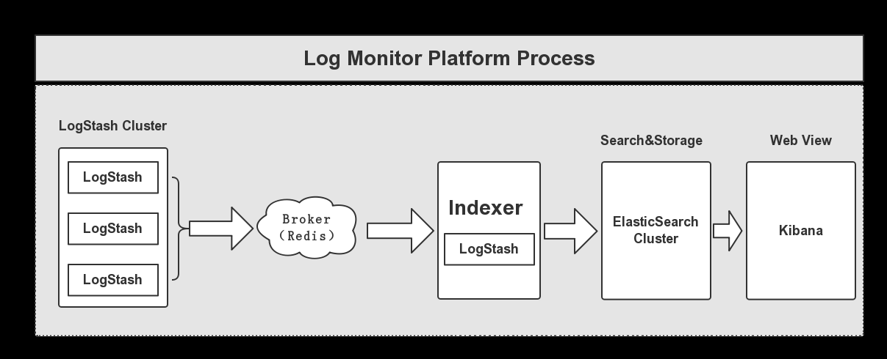
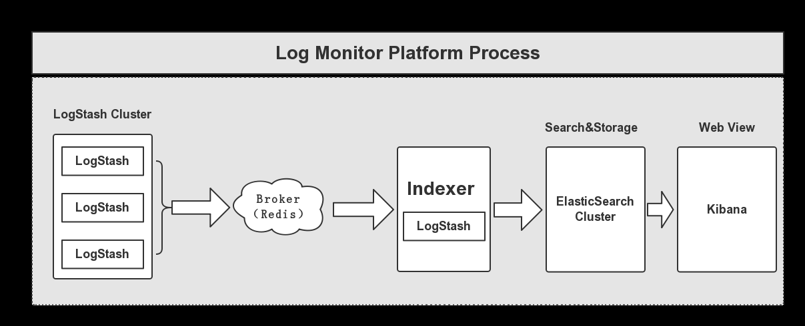

1.概述
在项目业务倍增的情况下，查询效率受到影响，这里我们经过讨论，引进了分布式搜索套件——ElasticSearch，通过分布式搜索来解决当下业务上存在的问题。下面给大家列出今天分析的目录：
- ElasticSearch 套件介绍
- ElasticSearch 应用场景和案例
- 平台架构
下面开始今天的内容分享。
2.ElasticSearch 套件
2.1LogStash
LogStash是一个开源的、免费的日志收集工具，属于Elastic家族的一员，负责将收集的日志信息输送到ElasticSearch，为ElasticSearch提供数据源。
2.2ElasticSearch
ElasticSearch是一个开源的分布式搜索引擎，具备高可靠性，支持非常多的企业级搜索用例。像Solr4一样，是基于Lucene构建的。支持时间索引和全文检索。官网：https://www.elastic.co 它对外提供一系列基于Java和HTTP的API，用于索引、检索、修改大多数配置。
2.3 Kibana
Kibana也是开源和免费的工具，同样也是Elastic家族的一员，它可以帮助我们汇总、分析和搜索重要数据日志，并且提供友好的Web可视化界面。它可以为LogStash和ElasticSearch提供一个可视化的Web界面。
下面我们来看看ElasticSearch的应用场景和案例。
3.ElasticSearch 应用场景和案例
在面对实时海量数据查询，实时搜索，全文搜索，ElasticSearch 都能够很好的去胜任，它是基于 Lucene、RESTful、分布式、面向云计算设计、实时搜索、全文搜索、稳定、高可靠、可扩展、安装和使用方便。下面给大家介绍一些场景的案例。
- Github
这个开源的托管平台，对于我们开发者来说，并不陌生，我们基本每天都会去访问Github，而Github使用ElasticSearch来实现搜索，运行在多个集群上。由于代码搜索索引很大，Github专门指定一个集群。Github使用Elasticsearch搜索20TB的数据，包括13亿的文件和1300亿行的代码。
- Mozilla
Mozilla公司因Firefox而闻名，它目前使用Elasticsearch将测试的结果以JSON的格式进行存储，开发人员可以非常方便的查找BUG。
- Sony
Sony公司使用Elasticsearch作为信息搜索引擎，以提供对外界的查询响应。
另外，还有很多企业也用到了ElasticSearch去作为一个分布式搜索引擎，这里就不一一列举了。
4.平台架构
下面，我给大家用一个图来说明日志监控平台的架构，如下图所示：
 
 通过上图，我们可以清晰的看到日志平台整个流向过程，下面我给大家来解释图中的各个环节的含义。首先，多个独立的Agent，这里就是图左边的三个LogStash节点，他们负责收集不同来源的数据，由一个Indexer负责进行汇总和分析数据，在这个当中有一个中间过程，这里我们使用了Broker，用Redis来实现这部分功能，其作用充当一个缓冲区，之后由ElasticSearch负责存储和搜索数据，最后由前段的Kibana可视化我们收集的数据。
这里说明几点需要注意的地方：
- 采用LogStash收集各种日志数据，其类型可以是：系统日志、文件、Redis、MQ等等。
- Broker作为远程代理和中心代理的缓冲区，使用Redis进行实现，原因有二：其一，可以提高系统的性能；其二，可以提高系统的高可用性，当中心代理提取数据失败时，数据保存在Redis中，可以规避数据丢失的风险。
- 中心代理使用LogStash，负责从Broker中获取数据，可以执行相关的分析和处理，它提供有Filter功能。
- ElasticSearch用于存储最终的数据，并对外提供搜索功能，基于Restful。
- Kibana提供一个简单、丰富的Web View可视化界面，用于可视化ElasticSearch集群中的数据，支持各种查询、统计和展示。
5.总结
这篇博客只是给大家入个门，让大家通过一个日志监控平台的案例去熟悉ElasticSearch套件的使用，以及它的背景。后面我会专门用于一个ElasticSearch实战系列，来给大家分析这部分内容，包括平台的搭建部署，到平台的实现这一整个流程，这篇文章大家能够有个印象，熟悉各个套件的作用即可。
6.结束语
这篇博客就和大家分享到这里，如果大家在研究学习的过程当中有什么问题，可以加群进行讨论或发送邮件给我，我会尽我所能为您解答，与君共勉！